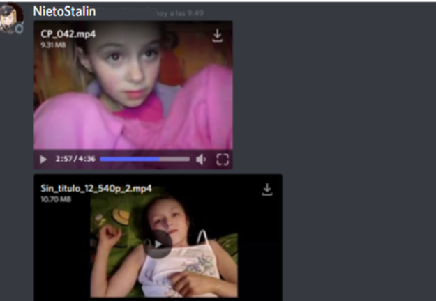

ES UNA PERSONA QUE PUEDE LLEGAR A SER PELIGROSO,PERO EN REALIDAD ES UN MUCHACHO DE 19 AÑOS QUE ES PEDOFILO Y CREE QUE ESO LO HACE MEJOR PERSONA.AYUDANOS A DIFUNDIRLO O A JODERLO.TE DEJARE MAS INFORMACION Y PRUEBAS ABAJO:
HE IS A PERSON WHO CAN BECOME DANGEROUS, BUT IN REALITY HE IS A 19-YEAR-OLD BOY WHO IS PEDOPHILIAN AND BELIEVES THAT THAT MAKES HIM A BETTER PERSON. HELP US TO SPREAD IT OR FUCK IT. I'LL LEAVE YOU MORE INFORMATION AND TESTS BELOW:
EVIDENCIA DEL PEDOFILO.///PEDOPHILE EVIDENCE:
EL TIENE UN SERVIDOR EN LA PLATAFORMA DISCORD.COM"se supone para niños y gamers" DONDE TIENE SUS AMIGOS Y SE OCULTA DE LOS CRIMENES DE PEDOFILIA QUE HACE
HE HAS A SERVER ON THE DISCORD.COM PLATFORM "is supposed for children and gamers" WHERE HE HAS HIS FRIENDS AND HIDES HIDE FROM THE PEDOPHILIAN CRIMES THAT HE DOES
LINK SERVER DISCORD.COM:
https://discord.com/invite/AgSTkzeb4qEL SIEMPRE CAMBIA DE NOMBRE Y DE CUENTAS. POR EL MOMENTO TIENE//HE ALWAYS CHANGES NAME AND ACCOUNTS. FOR THE MOMENT IT HAS: NietoStalin#5103 // Red Vendetta25#1542 // Cold#2649 (..ID TEMPORAL:531956342769057793)
TIENE UN CANAL DE YOUTUBE//IT HAS A YOUTUBE CHANNEL:
https://www.youtube.com/channel/UCVh3xExpbs-CEuodhs3_iuQ(si el servidor de iscord lo elimina o cambia link, Cualquer cosa en su canal de Youtube siempre publica el servidor) (If the iscord server removes it or changes the link, Anything on your YouTube channel always publishes the server)